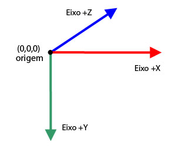
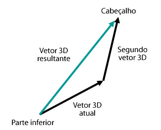

| Pacote | flash.geom |
| Classe | public class Vector3D |
| Herança | Vector3D |
| Versão da linguagem: | ActionScript 3.0 |
| Versões de runtime: | Flash Player 10, AIR 1.5 |
x representa o eixo horizontal e a propriedade y representa o eixo vertical. No espaço tridimensional, a propriedade z representa a profundidade. O valor da propriedade x aumenta à medida que o objeto se movimenta para a direita. O valor da propriedade y aumenta à medida que o objeto se movimenta para baixo. O valor da propriedade z aumenta à medida que o objeto se distancia do ponto de visão. Usando a projeção em perspectiva e o dimensionamento, o objeto parecerá maior quando estiver próximo da tela e menor quando estiver distante da tela. Como em um sistema de coordenadas tridimensional orientado para a direita (right-handed), o eixo z positivo se afasta do observador e o valor da propriedade z aumenta à medida que o objeto se distancia dos olhos do observador. O ponto de origem (0,0,0) do espaço global é o canto superior esquerdo do palco.

A classe Vector3D pode também representar uma direção, uma seta apontando da origem das coordenadas, por exemplo, (0,0,0), para um ponto final, ou um componente de ponto flutuante de um modelo de cores RGB (vermelho, verde, azul).
A notação de quatérnion introduz um quarto elemento, a propriedade w, que fornece informações adicionais sobre a orientação. Por exemplo, a propriedade w pode definir um ângulo de rotação de um objeto Vector3D. A combinação de ângulo de rotação e coordenadas x, y e z pode determinar a orientação do objeto de exibição. Veja uma representação dos elementos de Vector3D na notação da matriz:

Elementos da API relacionados
 Ocultar propriedades públicas herdadas
Ocultar propriedades públicas herdadas Mostrar propriedades públicas herdadas
Mostrar propriedades públicas herdadas| Propriedade | Definido por | ||
|---|---|---|---|
 | constructor : Object
Uma referência ao objeto de classe ou à função de construtor de uma determinada ocorrência de objeto. | Object | |
| length : Number [somente leitura]
O comprimento, a magnitude do objeto Vector3D atual, desde a origem (0,0,0) até as coordenadas x, y e z do objeto. | Vector3D | ||
| lengthSquared : Number [somente leitura]
O quadrado do comprimento do objeto Vector3D atual, calculado com as propriedades x, y e z. | Vector3D | ||
| w : Number
O quarto elemento de um objeto Vector3D (além das propriedades x, y e z) pode manter dados, como o ângulo de rotação. | Vector3D | ||
| x : Number
O primeiro elemento de um objeto Vector3D, como a coordenada x de um ponto no espaço tridimensional. | Vector3D | ||
| y : Number
O segundo elemento de um objeto Vector3D, como a coordenada y de um ponto no espaço tridimensional. | Vector3D | ||
| z : Number
O terceiro elemento de um objeto Vector3D, como a coordenada z de um ponto no espaço tridimensional. | Vector3D | ||
| Método | Definido por | ||
|---|---|---|---|
Cria uma ocorrência de um objeto Vector3D. | Vector3D | ||
Adiciona o valor dos elementos x, y e z do objeto Vector3D atual aos valores dos elementos x, y e z de outro objeto Vector3D. | Vector3D | ||
[estático]
Retorna o ângulo em radianos entre dois vetores. | Vector3D | ||
Retorna um novo objeto Vector3D, que é uma cópia exata do objeto Vector3D atual. | Vector3D | ||
Copia todos os dados de vetor do objeto de origem Vector3D para o objeto Vector3D da chamada. | Vector3D | ||
Retorna um novo objeto Vector3D perpendicular (em um ângulo reto) ao objeto Vector3D e a um outro objeto Vector3D. | Vector3D | ||
Diminui o valor dos elementos x, y e z do objeto Vector3D atual usando os valores dos elementos x, y e z do objeto Vector3D especificado. | Vector3D | ||
[estático]
Retorna a distância entre dois objetos Vector3D. | Vector3D | ||
Se o objeto Vector3D atual e aquele especificado como o parâmetro forem vértices unitários, esse método retornará o cosseno do ângulo entre os dois vértices. | Vector3D | ||
Determina se dois objetos Vector3D são iguais, comparando os elementos x, y e z do objeto Vector3D atual com os do objeto Vector3D especificado. | Vector3D | ||
|
Indica se um objeto tem uma propriedade especificada definida. | Object | |
Aumenta o valor dos elementos x, y e z do objeto Vector3D atual usando os valores dos elementos x, y e z de um objeto Vector3D especificado. | Vector3D | ||
|
Indica se uma ocorrência da classe Object está na cadeia de protótipos do objeto especificado como o parâmetro. | Object | |
Compara os elementos do objeto Vector3D atual com os elementos do objeto Vector3D especificado para determinar se eles são quase iguais. | Vector3D | ||
Define o objeto Vector3D atual como seu inverso. | Vector3D | ||
Converte um objeto Vector3D em um vetor unitário dividindo os três primeiros elementos (x, y, z) pelo comprimento do vetor. | Vector3D | ||
Divide o valor das propriedades x, y e z do objeto Vector3D atual pelo valor de sua propriedade w. | Vector3D | ||
|
Indica se a propriedade especificada existe e é enumerável. | Object | |
Dimensiona o objeto Vector3D atual por um escalar, uma grandeza. | Vector3D | ||
|
Define a disponibilidade de uma propriedade dinâmica para operações de repetição. | Object | |
Estabelece os integrantes de Vector3D para os valores especificados
| Vector3D | ||
Subtrai o valor dos elementos x, y e z do objeto Vector3D atual dos valores dos elementos x, y e z de outro objeto Vector3D. | Vector3D | ||
|
Retorna a representação da string deste objeto, formatado segundo as convenções específicas para a localidade. | Object | |
Retorna uma representação de string do objeto Vector3D atual. | Vector3D | ||
|
Retorna o valor primitivo do objeto especificado. | Object | |
| Constante | Definido por | ||
|---|---|---|---|
| X_AXIS : Vector3D [estático]
O eixo x definido como um objeto Vector3D com coordenadas (1,0,0). | Vector3D | ||
| Y_AXIS : Vector3D [estático]
O eixo y definido como um objeto Vector3D com coordenadas (0,1,0). | Vector3D | ||
| Z_AXIS : Vector3D [estático]
O eixo z definido como um objeto Vector3D com coordenadas (0,0,1). | Vector3D | ||
length | propriedade |
length:Number [somente leitura] | Versão da linguagem: | ActionScript 3.0 |
| Versões de runtime: | Flash Player 10, AIR 1.5 |
O comprimento, a magnitude do objeto Vector3D atual, desde a origem (0,0,0) até as coordenadas x, y e z do objeto. A propriedade w é ignorada. Um vetor unitário tem o comprimento ou magnitude 1.
Implementação
public function get length():NumberElementos da API relacionados
lengthSquared | propriedade |
lengthSquared:Number [somente leitura] | Versão da linguagem: | ActionScript 3.0 |
| Versões de runtime: | Flash Player 10, AIR 1.5 |
O quadrado do comprimento do objeto Vector3D atual, calculado com as propriedades x, y e z. A propriedade w é ignorada. Use o método lengthSquared() sempre que for possível, em vez da chamada de método Math.sqrt() mais lento do método Vector3D.length().
Implementação
public function get lengthSquared():NumberElementos da API relacionados
w | propriedade |
public var w:Number| Versão da linguagem: | ActionScript 3.0 |
| Versões de runtime: | Flash Player 10, AIR 1.5 |
O quarto elemento de um objeto Vector3D (além das propriedades x, y e z) pode manter dados, como o ângulo de rotação. O valor padrão é 0.
A notação de quatérnion usa um ângulo como o quarto elemento no cálculo da rotação tridimensional. A propriedade w pode ser usada para definir o ângulo de rotação sobre o objeto Vector3D. A combinação de ângulo de rotação e coordenadas (x,y,z) determina a orientação do objeto de exibição.
Além disso, a propriedade w pode ser usada como um fator de distorção de perspectiva para uma posição tridimensional projetada ou como um valor de transformação da projeção na representação de uma coordenada tridimensional no espaço bidimensional. Por exemplo, você pode criar uma matriz de projeção usando a propriedade Matrix3D.rawData que, quando aplicada a um objeto Vector3D, produz um valor de transformação no quarto elemento do objeto Vector3D (a propriedade w). A divisão dos outros elementos do objeto Vector3D pelo valor de transformação produz um objeto Vector3D projetado. Você pode usar o método Vector3D.project() para dividir os três primeiros elementos de um objeto Vector3D pelo seu quarto elemento.
Elementos da API relacionados
x | propriedade |
public var x:Number| Versão da linguagem: | ActionScript 3.0 |
| Versões de runtime: | Flash Player 10, AIR 1.5 |
O primeiro elemento de um objeto Vector3D, como a coordenada x de um ponto no espaço tridimensional. O valor padrão é 0.
y | propriedade |
public var y:Number| Versão da linguagem: | ActionScript 3.0 |
| Versões de runtime: | Flash Player 10, AIR 1.5 |
O segundo elemento de um objeto Vector3D, como a coordenada y de um ponto no espaço tridimensional. O valor padrão é 0.
z | propriedade |
public var z:Number| Versão da linguagem: | ActionScript 3.0 |
| Versões de runtime: | Flash Player 10, AIR 1.5 |
O terceiro elemento de um objeto Vector3D, como a coordenada z de um ponto no espaço tridimensional. O valor padrão é 0.
Vector3D | () | Construtor |
public function Vector3D(x:Number = 0., y:Number = 0., z:Number = 0., w:Number = 0.)| Versão da linguagem: | ActionScript 3.0 |
| Versões de runtime: | Flash Player 10, AIR 1.5 |
Cria uma ocorrência de um objeto Vector3D. Se você não especificar um parâmetro para o construtor, será criado um objeto Vector3D com os elementos (0,0,0,0).
Parâmetrosx:Number (default = 0.) | |
y:Number (default = 0.) | |
z:Number (default = 0.) | |
w:Number (default = 0.) |
add | () | método |
public function add(a:Vector3D):Vector3D| Versão da linguagem: | ActionScript 3.0 |
| Versões de runtime: | Flash Player 10, AIR 1.5 |
Adiciona o valor dos elementos x, y e z do objeto Vector3D atual aos valores dos elementos x, y e z de outro objeto Vector3D. O método add() não altera o objeto Vector3D atual. Em vez disso, ele retorna um novo objeto Vector3D com os novos valores.
O resultado da adição de dois vetores é um vetor resultante. Uma forma de visualizar o resultado é desenhar um vetor a partir da origem do primeiro vetor até o fim do segundo vetor. O vetor resultante é a distância entre o ponto de origem do primeiro vetor e o ponto final do segundo vetor.

Parâmetros
a:Vector3D — Um objeto Vector3D a ser adicionado ao objeto Vector3D atual.
|
Vector3D — Um objeto Vector3D que é o resultado da adição do objeto Vector3D atual a outro objeto Vector3D.
|
Elementos da API relacionados
angleBetween | () | método |
public static function angleBetween(a:Vector3D, b:Vector3D):Number| Versão da linguagem: | ActionScript 3.0 |
| Versões de runtime: | Flash Player 10, AIR 1.5 |
Retorna o ângulo em radianos entre dois vetores. O ângulo retornado é o menor radiano de rotação do primeiro objeto Vector3D até ele se alinhar ao segundo objeto Vector3D.
O método angleBetween() é estático. Você pode usá-lo diretamente como um método da classe Vector3D.
Para converter graus em radianos, use a seguinte fórmula:
radiano = Math.PI/180 * graus
Parâmetros
a:Vector3D — O primeiro objeto Vector3D.
| |
b:Vector3D — O segundo objeto Vector3D.
|
Number — O ângulo entre dois objetos Vector3D.
|
clone | () | método |
copyFrom | () | método |
public function copyFrom(sourceVector3D:Vector3D):void| Versão da linguagem: | ActionScript 3.0 |
| Versões de runtime: | Flash Player 11, AIR 3.0, Flash Lite 4 |
Copia todos os dados de vetor do objeto de origem Vector3D para o objeto Vector3D da chamada.
Parâmetros
sourceVector3D:Vector3D — Objeto Vector3D a partir do qual os dados são copiados.
|
crossProduct | () | método |
public function crossProduct(a:Vector3D):Vector3D| Versão da linguagem: | ActionScript 3.0 |
| Versões de runtime: | Flash Player 10, AIR 1.5 |
Retorna um novo objeto Vector3D perpendicular (em um ângulo reto) ao objeto Vector3D e a um outro objeto Vector3D. Se as coordenadas do objeto Vector3D retornado forem (0,0,0), os dois objetos Vector3D serão paralelos entre si.

Você pode usar o produto vetorial normalizado de dois vértices de uma superfície poligonal com o vetor normalizado da câmera ou ponto de visão para obter um produto escalar. O valor do produto escalar pode identificar se uma superfície de um objeto tridimensional está oculta do ponto de visão.
Parâmetros
a:Vector3D — Um segundo objeto Vector3D.
|
Vector3D — Um novo objeto Vector3D perpendicular ao objeto Vector3D atual e ao objeto Vector3D especificado como o parâmetro.
|
Elementos da API relacionados
decrementBy | () | método |
public function decrementBy(a:Vector3D):void| Versão da linguagem: | ActionScript 3.0 |
| Versões de runtime: | Flash Player 10, AIR 1.5 |
Diminui o valor dos elementos x, y e z do objeto Vector3D atual usando os valores dos elementos x, y e z do objeto Vector3D especificado. Ao contrário do método Vector3D.subtract(), o método decrementBy() altera o objeto Vector3D atual e não retorna um novo objeto Vector3D.
Parâmetros
a:Vector3D — O objeto Vector3D que contém os valores que serão subtraídos do objeto Vector3D atual.
|
Elementos da API relacionados
distance | () | método |
public static function distance(pt1:Vector3D, pt2:Vector3D):Number| Versão da linguagem: | ActionScript 3.0 |
| Versões de runtime: | Flash Player 10, AIR 1.5 |
Retorna a distância entre dois objetos Vector3D. O método distance() é estático. Você pode usá-lo diretamente como um método da classe Vector3D para obter a distância euclidiana entre dois pontos tridimensionais.
Parâmetros
pt1:Vector3D — Um objeto Vector3D como o primeiro ponto tridimensional.
| |
pt2:Vector3D — Um objeto Vector3D como o segundo ponto tridimensional.
|
Number — A distância entre dois objetos Vector3D.
|
dotProduct | () | método |
public function dotProduct(a:Vector3D):Number| Versão da linguagem: | ActionScript 3.0 |
| Versões de runtime: | Flash Player 10, AIR 1.5 |
Se o objeto Vector3D atual e aquele especificado como o parâmetro forem vértices unitários, esse método retornará o cosseno do ângulo entre os dois vértices. Os vértices unitários são vértices que apontam para a mesma direção, mas seu comprimento é um. Eles removem o comprimento do vetor como um fator no resultado. Você pode usar o método normalize() para converter um vetor em vetor unitário.
O método dotProduct() encontra o ângulo entre dois vértices. Ele é usado também na remoção de face oculta ou nos cálculos de iluminação. A remoção de face oculta é um procedimento para determinar as superfícies que estão ocultas do ponto de visão. Você pode usar os vértices normalizados da câmera, ponto de visão, ou olhos, e o produto vetorial dos vértices da superfície poligonal para obter o produto escalar. Se o produto escalar for menor que zero, a superfície ficará voltada para a câmera ou o observador. Se os dois vértices unitários forem perpendiculares entre si, eles serão ortogonais e o produto escalar será zero. Se os dois vértices forem paralelos entre si, o produto escalar será um.
Parâmetros
a:Vector3D — O segundo objeto Vector3D.
|
Number — Um escalar que é o produto escalar do objeto Vector3D atual e do objeto Vector3D especificado.
|
Elementos da API relacionados
equals | () | método |
public function equals(toCompare:Vector3D, allFour:Boolean = false):Boolean| Versão da linguagem: | ActionScript 3.0 |
| Versões de runtime: | Flash Player 10, AIR 1.5 |
Determina se dois objetos Vector3D são iguais, comparando os elementos x, y e z do objeto Vector3D atual com os do objeto Vector3D especificado. Se os valores desses elementos são iguais, os dois objetos Vector3D são iguais. Se o segundo parâmetro opcional for definido como true, os quatro elementos dos objetos Vector3D, incluindo a propriedade w, serão comparados.
Parâmetros
toCompare:Vector3D — O objeto Vector3D a ser comparado com o objeto Vector3D atual.
| |
allFour:Boolean (default = false)w dos objetos Vector3D será usada na comparação.
|
Boolean — Valor true se o objeto Vector3D especificado for igual ao objeto Vector3D atual; false se não forem iguais.
|
Elementos da API relacionados
incrementBy | () | método |
public function incrementBy(a:Vector3D):void| Versão da linguagem: | ActionScript 3.0 |
| Versões de runtime: | Flash Player 10, AIR 1.5 |
Aumenta o valor dos elementos x, y e z do objeto Vector3D atual usando os valores dos elementos x, y e z de um objeto Vector3D especificado. Ao contrário do método Vector3D.add(), o método incrementBy() altera o objeto Vector3D atual e não retorna um novo objeto Vector3D.
Parâmetros
a:Vector3D — O objeto Vector3D a ser adicionado ao objeto Vector3D atual.
|
Elementos da API relacionados
nearEquals | () | método |
public function nearEquals(toCompare:Vector3D, tolerance:Number, allFour:Boolean = false):Boolean| Versão da linguagem: | ActionScript 3.0 |
| Versões de runtime: | Flash Player 10, AIR 1.5 |
Compara os elementos do objeto Vector3D atual com os elementos do objeto Vector3D especificado para determinar se eles são quase iguais. Os dois objetos Vector3D serão quase iguais se os valores de todos os elementos dos dois vértices forem iguais, ou o resultado da comparação estiver dentro da faixa de tolerância. A diferença entre dois elementos deve ser menor que o número especificado como o parâmetro tolerance. Se o terceiro parâmetro opcional for definido como true, os quatro elementos dos objetos Vector3D, incluindo a propriedade w, serão comparados. Caso contrário, somente os elementos x, y e z serão incluídos na comparação.
Parâmetros
toCompare:Vector3D — O objeto Vector3D a ser comparado com o objeto Vector3D atual.
| |
tolerance:Number — Um número que determina o fator de tolerância. Se a diferença entre os valores do elemento do Vector3D especificado no parâmetro toCompare e do elemento do Vector3D atual for menor que o número da tolerância, ambos os valores serão considerados quase iguais.
| |
allFour:Boolean (default = false)w dos objetos Vector3D será usada na comparação.
|
Boolean — Valor true se o objeto Vector3D especificado for quase igual ao objeto Vector3D atual; false se não forem iguais.
|
Elementos da API relacionados
negate | () | método |
public function negate():void| Versão da linguagem: | ActionScript 3.0 |
| Versões de runtime: | Flash Player 10, AIR 1.5 |
Define o objeto Vector3D atual como seu inverso. O objeto inverso é também considerado o oposto do objeto original. O valor das propriedades x, y e z do objeto Vector3D atual é alterado para -x, -y e -z.
normalize | () | método |
public function normalize():Number| Versão da linguagem: | ActionScript 3.0 |
| Versões de runtime: | Flash Player 10, AIR 1.5 |
Converte um objeto Vector3D em um vetor unitário dividindo os três primeiros elementos (x, y, z) pelo comprimento do vetor. Os vértices unitários têm uma direção, mas seu comprimento é um. Eles simplificam os cálculos de vetor removendo o comprimento como um fator.
RetornaNumber — O comprimento do objeto Vector3D atual.
|
project | () | método |
public function project():void| Versão da linguagem: | ActionScript 3.0 |
| Versões de runtime: | Flash Player 10, AIR 1.5 |
Divide o valor das propriedades x, y e z do objeto Vector3D atual pelo valor de sua propriedade w.
Se o objeto Vector3D atual for o resultado da multiplicação de um objeto Vector3D por um objeto Matrix3D de projeção, a propriedade w poderá manter o valor da transformação. O método project() poderá concluir a projeção dividindo os elementos pela propriedade w. Use a propriedade Matrix3D.rawData para criar um objeto Matrix3D de projeção.
scaleBy | () | método |
public function scaleBy(s:Number):void| Versão da linguagem: | ActionScript 3.0 |
| Versões de runtime: | Flash Player 10, AIR 1.5 |
Dimensiona o objeto Vector3D atual por um escalar, uma grandeza. Os elementos x, y e z do objeto Vector3D são multiplicados pelo número escalar especificado no parâmetro. Por exemplo, se aumentar a escala do vetor em dez, o resultado será um vetor dez vezes mais longo. O escalar pode também mudar a direção do vetor. A multiplicação do vetor por um número negativo inverte a direção.
Parâmetros
s:Number — Um multiplicador (escalar) usado para dimensionar um objeto Vector3D.
|
setTo | () | método |
public function setTo(xa:Number, ya:Number, za:Number):void| Versão da linguagem: | ActionScript 3.0 |
| Versões de runtime: | Flash Player 11, AIR 3.0, Flash Lite 4 |
Estabelece os integrantes de Vector3D para os valores especificados
Parâmetros
xa:Number — os valores para estabelecer o vetor em.
| |
ya:Number | |
za:Number |
subtract | () | método |
public function subtract(a:Vector3D):Vector3D| Versão da linguagem: | ActionScript 3.0 |
| Versões de runtime: | Flash Player 10, AIR 1.5 |
Subtrai o valor dos elementos x, y e z do objeto Vector3D atual dos valores dos elementos x, y e z de outro objeto Vector3D. O método subtract() não altera o objeto Vector3D atual. Em vez disso, esse método retorna um novo objeto Vector3D com os novos valores.
Parâmetros
a:Vector3D — O objeto Vector3D a ser subtraído do objeto Vector3D atual.
|
Vector3D — Um novo objeto Vector3D que é a diferença entre o objeto Vector3D atual e o objeto Vector3D especificado.
|
Elementos da API relacionados
toString | () | método |
public function toString():String| Versão da linguagem: | ActionScript 3.0 |
| Versões de runtime: | Flash Player 10, AIR 1.5 |
Retorna uma representação de string do objeto Vector3D atual. A string que contém os valores das propriedades x, y e z.
String — Uma string que contém os valores das propriedades x, y e z.
|
X_AXIS | Constante |
public static const X_AXIS:Vector3D| Versão da linguagem: | ActionScript 3.0 |
| Versões de runtime: | Flash Player 10, AIR 1.5 |
O eixo x definido como um objeto Vector3D com coordenadas (1,0,0).
Y_AXIS | Constante |
public static const Y_AXIS:Vector3D| Versão da linguagem: | ActionScript 3.0 |
| Versões de runtime: | Flash Player 10, AIR 1.5 |
O eixo y definido como um objeto Vector3D com coordenadas (0,1,0).
Z_AXIS | Constante |
public static const Z_AXIS:Vector3D| Versão da linguagem: | ActionScript 3.0 |
| Versões de runtime: | Flash Player 10, AIR 1.5 |
O eixo z definido como um objeto Vector3D com coordenadas (0,0,1).
Wed Jun 13 2018, 11:10 AM Z